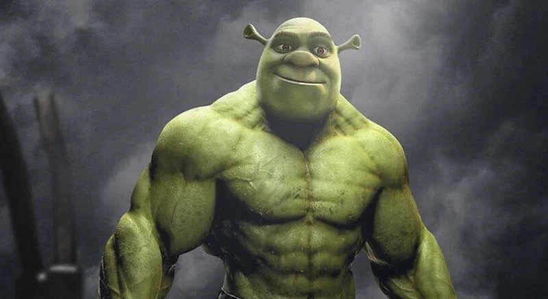
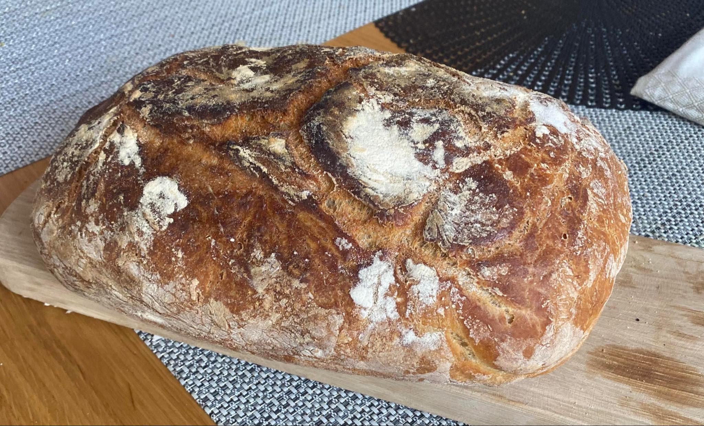

Nazywam się Bartłomiej Kleszczewski, a to moja pierwsza strona, jestem byłym studentem
informatyki, poza pracą postanowiłem wykorzystwyać wolny czas na naukę i dlatego dołączyłem do tego kursu. Na
studiach najwięcej frajdy sprawiało mi programowanie, jednak najwięcej czasu musiałem poświęcać na
matematykę.
jak skończę kurs i znajdę pracę kupię doga Niemieckiego i nazwę Okruszek albo Kruszynka
